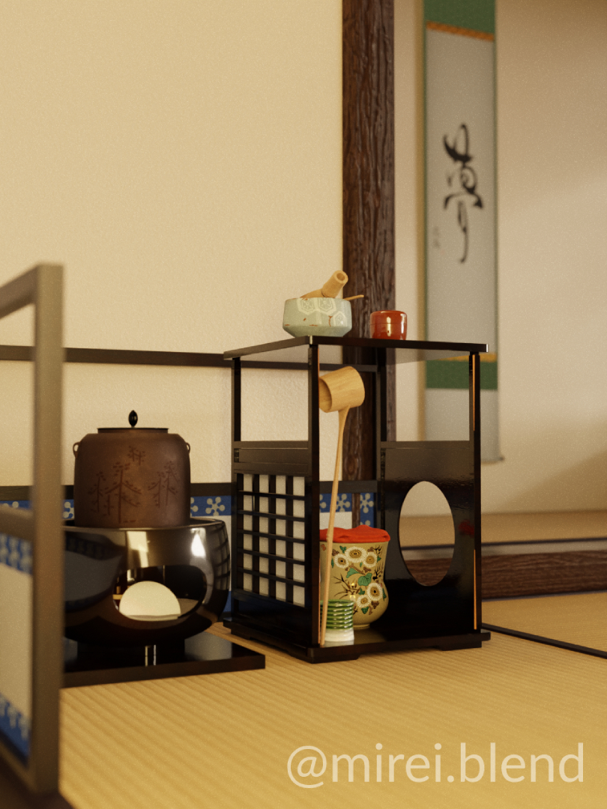

Back to Projects

A 3D render of a 吉野棚 (yoshino-dana) tea set that I made after attending a tea ceremony by the University of Illinois Urbana-Champaign's Japan House, as part of the Fall 2022 ENG 100 course.
Thank you to the Japan House staff for allowing me to take reference photos for this project, and to @japanhouseuofi and @illinoiscs for the feature on Instagram!